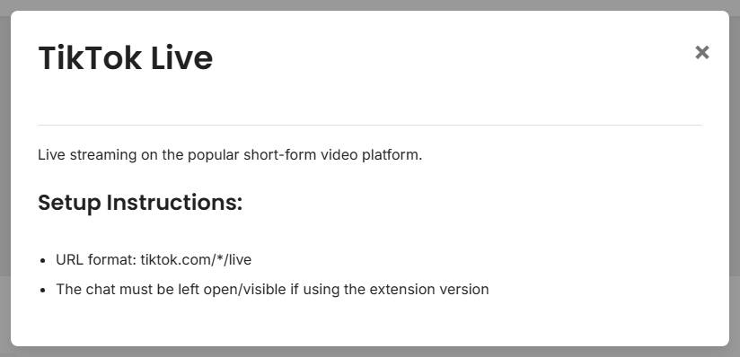

OBS를 열기 전에 가장 간단한 캡처 방식을 선택하세요.
먼저 플랫폼을 검색하세요. 더 어려운 방법을 시도하기 전에 클릭하여 짧은 설정 안내를 읽으세요.

YouTube, Twitch, Facebook, Discord, Slack, WhatsApp 및 대부분의 브라우저 기반 소스는 여기서 시작하세요.
플랫폼별 자세한 안내는 다음을 참고하세요: 지원 사이트.
데스크톱 설정: 독립 실행형 앱 가이드.
소스 페이지는 정상적인 방식입니다. 해당 플랫폼에 Social Stream 전용 페이지가 필요하다는 뜻입니다.
| 상황 | 사용: |
|---|---|
| 일반 지원 채팅 사이트 | 브라우저 확장 프로그램 |
| 사이트에서 채팅 팝아웃을 안내함 | 팝아웃/채팅 전용 창 |
| 숨겨진 브라우저 탭의 업데이트가 멈춤 | 데스크톱 앱 |
| 설정에서 방/채널/토큰을 요청함 | 소스 페이지 |
| 사용자 지정 자동화 또는 수신 데이터 | 명령/API 또는 사용자 지정 소스 |
잘 모르겠다면 해당하는 항목 중 가장 쉬운 방법부터 시작하세요. 나중에 방식을 바꿀 수 있습니다.